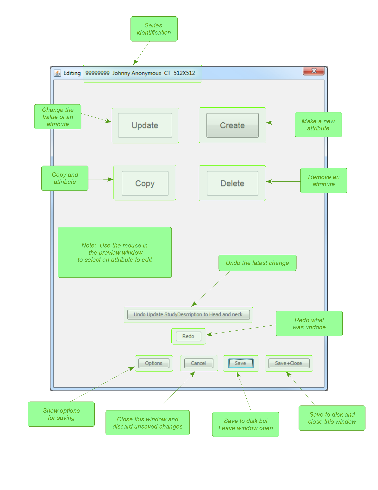
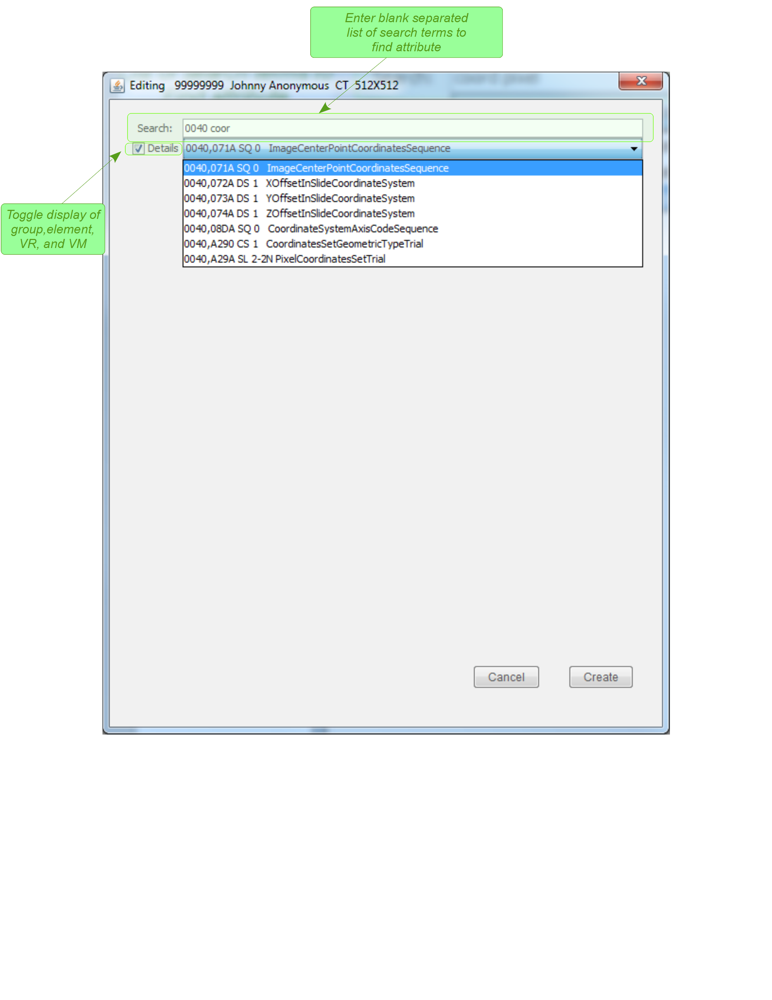
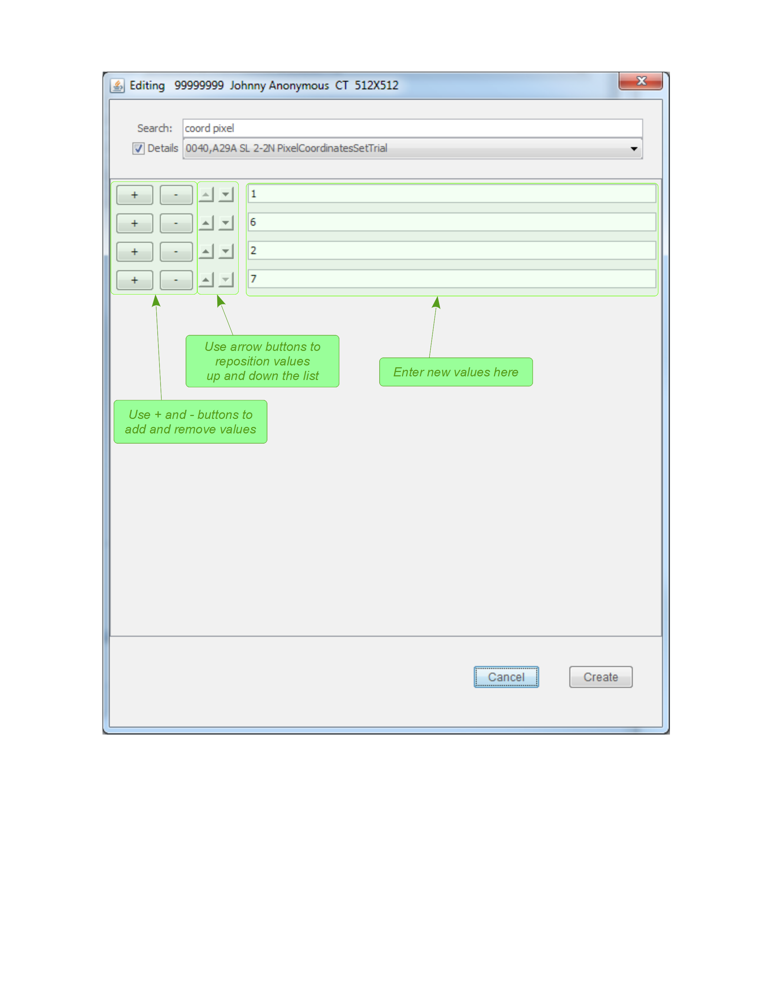

Edit.html
TheEdit... button near the lower right in the preview
window (in text mode only) opens the window shown below:

Notes on Editing
Selecting an Attribute
To select an attribute for editing, use the mouse to click on it in the preview screen. The selection will be highlighted in grey as shown here:
Validating Attributes
Cursory validation is performed on the changes made to files, but the user is largely responsible for entering valid data. It is also possible to make a DICOM file invalid by deleting required attributes or adding attributes that are not allowed for the given modality. Again, the use is responsible for using attributes correctly.Update
The most frequent editing operation is to update (change) an existing value. To update, select an attribute and then click the
Update button.
The window will show the current value(s) of the attribute. Enter the changes and
then click the Update button in the lower right corner.
Note that you can only update primitive values such as numbers and strings. If a sequence attribute
is selected, then the Update button is disabled.
Create
When creating a new value, the root of the attribute tree is assumed by default. If you want to create a value in a sub-tree sequence, then select an attribute at the same level, or the parent attribute. When the
Create is clicked a window like this will be shown:

After selecting the attribute to be created, fill in value(s) as shown:

Copy
The DICOM specification does not allow duplicate attributes, so only sequence items can be copied. The
Copy button will only be enabled when a sequence item is selected.
To perform a copy, select the sequence item and then click Copy. If an item contains a tree
of sub-items, then the entire tree will be copied.
Delete
Any item may be deleted. To delete an item, select it, and then click the
Delete button. If the
attribute contains other attributes, then the entire tree is removed.
Options
The
Editing Options window lets you control how editing changes are saved.
The default is to save all slices in the series as DICOM without overwriting the original files, as shown below:
 Any combination of boxes may be selected, though at least one of the last four should be selected or nothing will be saved.
Any combination of boxes may be selected, though at least one of the last four should be selected or nothing will be saved.
Save to all slices in seriesIf selected, the edits will be made to all slices and they will all be written to disk. If not selected, only the current slice will be changed and saved.Over-write original file(s)If selected, the original files are over written, otherwise new files are created and put in the destination folder indicated in the main window.Save as DICOMSave the files as DICOMSave as textSave metadata as text. This can be useful for later viewing or processing with other tools.Save as PNG imageSaving as PNG allows importing the image into other tools or web pages. This is ignored if the file is not an image modality, such as RTSTRUCT.Save as XMLSaving as XML puts the metadata in a structured format that can be interpreted with other software tools.
Developed by Jim Irrer